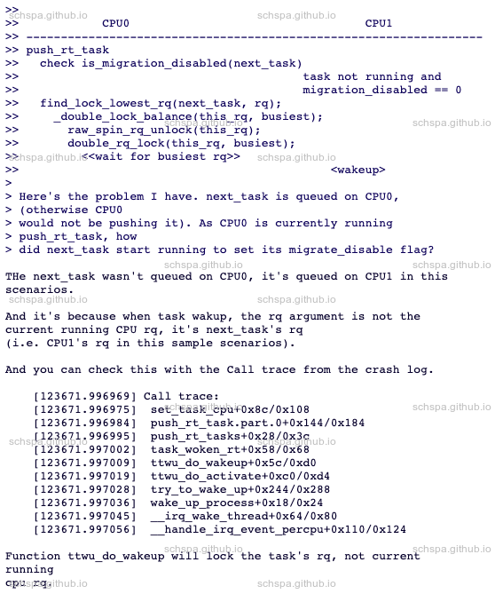
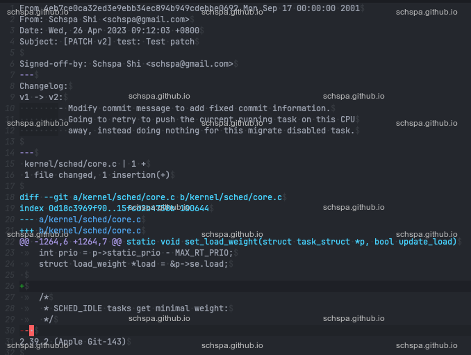
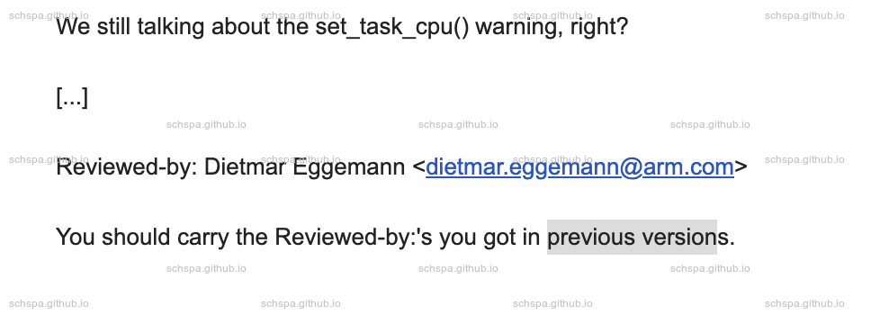

Send Patchs with email
Table of Contents
配置环境
environment
| OS | macos |
| gmail |
gmail
应用专用密码
发送邮件
git send-email -smtp-debug --to=schspa@gmail.com -1
心理建设
patch问题解答
要在合理的范围内质疑, maintainer 也会有没考虑周全的情况。

Comment Message
Comments
明确问题的引入点
Commit 95158a89dd50 ("sched,rt: Use the full cpumask for balancing")allow find_lock_lowest_rq to pick a task with migration disabled.This commit is intended to push the current running task on this CPUaway.There is a race scenario, which allows a migration disabled task tobe migrated to another CPU.When there is a RT task with higher priority, rt sched class wasintended to migrate higher priority task to lowest rq via push_rt_tasks,this WARNING will happen here.With the system running on PREEMPT_RT, rt_spin_lock will disablemigration, this will make the problem easier to reproduce.
明确给出错误,失败日志
At the moment the following QEMU command line triggers an assertionfailure On xlnx-versal SOC:qemu-system-aarch64 \-machine xlnx-versal-virt -nographic -smp 2 -m 128 \-fsdev local,id=shareid,path=${HOME}/work,security_model=none \-device virtio-9p-device,fsdev=shareid,mount_tag=share \-fsdev local,id=shareid1,path=${HOME}/Music,security_model=none \-device virtio-9p-device,fsdev=shareid1,mount_tag=share1qemu-system-aarch64: ../migration/savevm.c:860:vmstate_register_with_alias_id:Assertion `!se->compat || se->instance_id == 0' failed.This problem was fixed on arm virt platform in patch
明确场景区别
This problem was fixed on arm virt platform in patchhttps://lists.nongnu.org/archive/html/qemu-devel/2016-07/msg01119.htmlIt works perfectly on arm virt platform. but there is still there onxlnx-versal SOC.The main difference between arm virt and xlnx-versal is they usedifferent way to create virtio-mmio qdev. on arm virt, it callssysbus_create_simple("virtio-mmio", base, pic[irq]); which will callsysbus_mmio_map internally and assign base address to subsys devicemmio correctly. but xlnx-versal's implements won't do this.However, xlnx-versal can't switch to sysbus_create_simple() to createvirtio-mmio device. It's because xlnx-versal's cpu useVersalVirt.soc.fpd.apu.mr as it's memory. which is subregion ofsystem_memory. sysbus_create_simple will add virtio to system_memory,which can't be accessed by cpu.
给出出问题的场景
T21124 p9_read_work======================== second trans =================================p9_client_walkp9_client_rpcp9_client_prepare_reqp9_tag_allocreq = kmem_cache_alloc(p9_req_cache, GFP_NOFS);tag = idr_alloc<< preempted >>req->tc.tag = tag;/* req->[refcount/tag] == uninitialized */m->rreq = p9_tag_lookup(m->client, m->rc.tag);/* increments uninitalized refcount */refcount_set(&req->refcount, 2);/* cb drops one ref */p9_client_cb(req)/* reader thread drops its ref:request is incorrectly freed */p9_req_put(req)/* use after free and ref underflow */p9_req_put(req)
给出解决方案
We can solve this by simply assign mmio[0].addr directly. makesvirtio_mmio_bus_get_dev_path to produce correct unique device path.
Tag
| Acked-by | Indicates that the code changes have been reviewed and approved by a specific person. |
| Reviewed-by | Similar to Acked-by, indicates that the code changes have been reviewed and approved by a specific person. |
| Tested-by | Indicates that the code changes have been tested and verified by a specific person. |
| Signed-off-by | Indicates that the person who is adding the tag certifies that they have the right to submit the changes, and that they agree to the license terms of the project. |
| Reported-by | Indicates that the person adding the tag is reporting a bug or issue, rather than submitting a patch. |
| Suggested-by | Indicates that the person adding the tag is suggesting a change or improvement, but may not have fully reviewed or tested the changes. |
| Reviewed-and-tested-by | Indicates that the person adding the tag has both reviewed and tested the code changes. |
| Original-patch-by | Indicates the original author of the patch, if different from the person submitting it. |
| Forwarded-by | Indicates that the person adding the tag is forwarding an email or patch from another source. |
| Inspired-by | Indicates that the person adding the tag was inspired by another idea or implementation. |
| Stable-dep-of | |
| Debugged-by | |
| Co-developed-by |
这些Tag间需要连续,中间不能有空行。
如下面的patch, Reported-by 和 Signed-off-by 标签之间有一个空行,这样会导致
git interpret-trailers 命令无法正常运行。
>> To fix it, we can initize the refcount to zero before add to idr.>>>> Reported-by: syzbot+8f1060e2aaf8ca55220b@syzkaller.appspotmail.com>>>> There should be no empty line between the tags; tags are part of the> "trailer" and some tools handle it as such (like git interpret-trailers),> which would ignore that Reported-by as it is not part of the last block> of text.>Thanks for reminding the format issue here.>> Signed-off-by: Schspa Shi <schspa@gmail.com>>> --->> net/9p/client.c | 4 ++++>> 1 file changed, 4 insertions(+)
使用 git interpret-trailers 来获取某提交的标签.
git interpret-trailers --parse <(git log -n 1 --format=%B)
patch version
git format-patch -v 2 HEAD^ls -al v2-0001-test-Test-patch.patch
change log

git am 测试
git reset --hard origin/mastergit am v2-0001-test-Test-patch.patchgit log -n 1
提交日志中没有Changelog的内容.
previous versions Reviewed-by
如果之前的版本已经得到了部分reviewer's允许, Reviewed-by Tag可以直接加入到提交记
录中。

Patch set
git send-email --thread --no-chain-reply-to --to=your-email@email.com --cc=your-another-email@email.com v2-0001-test-Test-patch.patch v2-0002-test-test-patch-serial.patch
提交技巧
问题分析
在适当的位置添加delay来提高复现概率
注意锁范围
大多数的BUG都是因为锁范围有问题而产生的。特别是先unlock,之后再去lock的情景,如果
有类似情况,一定要多加注意。